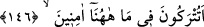

143-144 Bilin ki, ben size gönderilmiş güvenilir bir elçiyim. Artık Allah’a karşı
gelmekten sakının ve bana itaat edin.
Çünkü benim sizin aranızda emin bir kimse olarak meşhur olmam, Allah’tan
korkmanızı ve sizi dâvet ettiğim şeylerde bana itaat etmenizi gerektirir.
145. Buna karşı sizden hiçbir ücret istemiyorum. Benim ecrimi verecek olan,
ancak âlemlerin Rabbi’dir.
“Buna karşı” yâni nasîhatim ve dâvetim karşılığında “sizden hiçbir ücret
istemiyorum.” Çünkü ücret, iffet sâhibi biri için bir töhmettir. “Benim ecrimi verecek
olan, ancak âlemlerin Rabbi’dir.” Beni gönderen O’dur. Ücretim de O’na âiddir.
Bilakis ihlaslı kullarının ecri O’dur. Nitekim kudsî bir hadîste şöyle buyrulmuştur:
“Kimi (kendim için) öldürürsem, onun diyeti benim.”
Mesnevî’de der ki:
Âşıkların sevinci de O’dur, kederi de O
El emeklerinin, hizmetlerinin karşılığı da yine O’dur
146. Siz burada, güven içinde bırakılacak mısınız (sanırsınız)?
“Siz burada,” bu mekanda, yâni dünyada sâbit olan nimetler içinde “güven içinde”
âfetlerden emin ve fırsatın elden gitmesinden de sâlim bir halde “bırakılacak mısınız
(sanırsınız)?” yapılanların karşılığının verilmesi için başka bir âlem olmadığını mı
zannedersiniz?
Buradaki soru reddetmek ve azarlamak içindir. Yâni siz bırakılacağınızı mı
zannediyorsunuz, demektir.
Bu nimetleri aşağıdaki âyette şöyle açıkladı:
147. Böyle bahçelerde, çeşme başlarında?